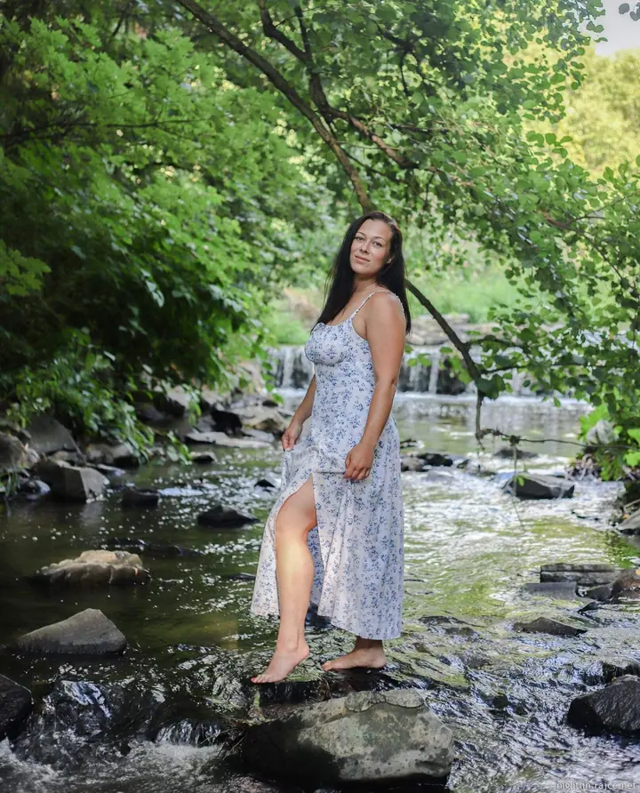

Pohlednice č. 1
Rodinné a těhotenské focení
Focení celé rodiny, dětí nebo maminky v očekávání. V ceně 1990 Kč je 10 retušovaných fotografií ve třech barevných úpravách v elektronické podobě.
Pro: vás · Od: Markéta
Rodinná, těhotenská a svatební fotografka
Ahoj, jsem Markéta. Fotím lidi, kteří k sobě patří.
Napište miFotím ve volném čase ↙
Fotografie pro každou příležitost

O mně
Jmenuji se Markéta Vařeková a fotografování je moje velká vášeň, které se věnuji ve volném čase. Nejčastěji fotím rodiny, děti, těhotenské a svatební fotografie, ale ráda se podívám i na křtiny nebo k vám do ateliéru.
Mám ráda fotky, ve kterých se nemusí nic hrát. Děti skáčou, sestry se objímají na lavičce, rodiče se smějí. Část fotek nechávám v barvě, část převádím do černobílé, a z každého focení dostanete fotografie ve více barevných úpravách.
Moje motto zní nemluv a tvoř. Kromě focení na zakázku prodávám i své autorské fotografie na Fleru.
Co fotím
Pohlednice č. 1
Focení celé rodiny, dětí nebo maminky v očekávání. V ceně 1990 Kč je 10 retušovaných fotografií ve třech barevných úpravách v elektronické podobě.
Pro: vás · Od: Markéta
Pohlednice č. 2
Můžete si vybrat jen obřad se skupinkami a párovým focením, nebo celý den od ranních příprav po večerní zábavu. Fotografie předávám na flash disku a k nim dostanete nejhezčí fotku ve větším formátu.
Pro: vás · Od: Markéta
Pohlednice č. 3
Focení jen pro vás, venku v přírodě nebo ve městě. Stejně jako u rodinného focení dostanete 10 retušovaných fotografií ve třech barevných úpravách.
Pro: vás · Od: Markéta
Portfolio
Jak to probíhá
Ozvěte se přes formulář, e-mailem nebo telefonem. Odpovím co nejdříve.
Vybereme typ focení, balíček, termín a místo, ať je to venku, nebo v ateliéru.
Fotíme v klidu a bez spěchu. Děti můžou běhat, skákat a být samy sebou.
Retušované fotografie dostanete v elektronické podobě, svatební na flash disku spolu s dárkem: nejhezčí fotkou ve větším formátu.
Otázky
Rodinné, těhotenské i focení jednotlivců stojí 1990 Kč. V ceně je 10 retušovaných fotografií ve třech barevných úpravách v elektronické podobě.
Obřad, skupinky a párové focení za 8500 Kč. Obřad, párové focení a první tanec za 10 500 Kč. Celý den od ranních příprav po večerní zábavu (maximálně 12 hodin) za 16 000 Kč.
Záleží na délce focení. Z poslední svatby v maximálním balíčku jsem předala na disku zhruba 1700 fotek. Fotky dostanete na flash disku a k tomu nejhezčí fotografii ve větším formátu.
Ano, focení křtin stojí 3000 Kč. Termín a průběh si domluvíme předem.
Napište mi
Markéta